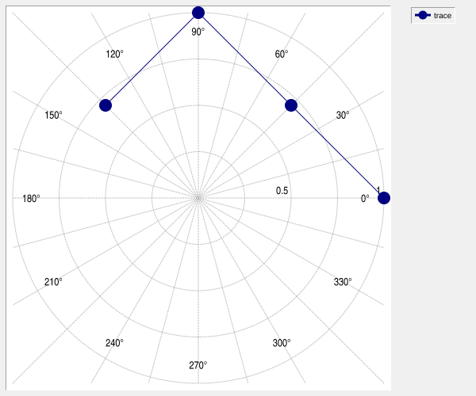
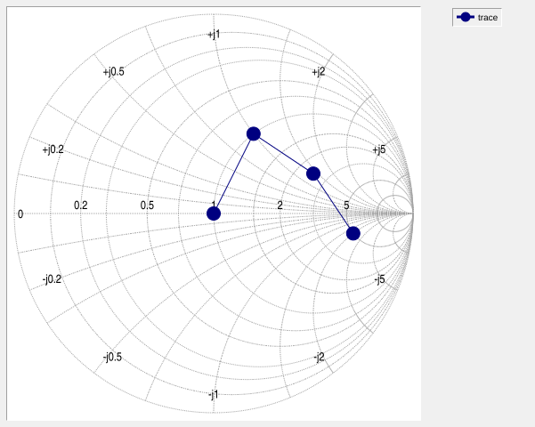
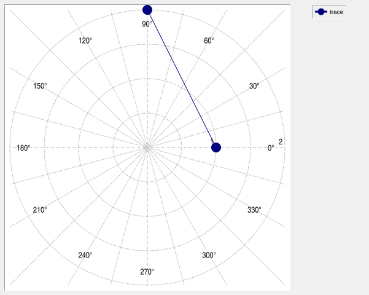
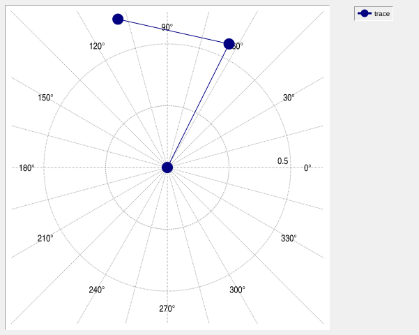
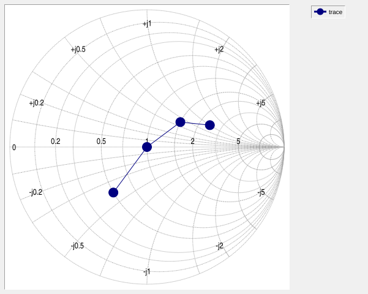
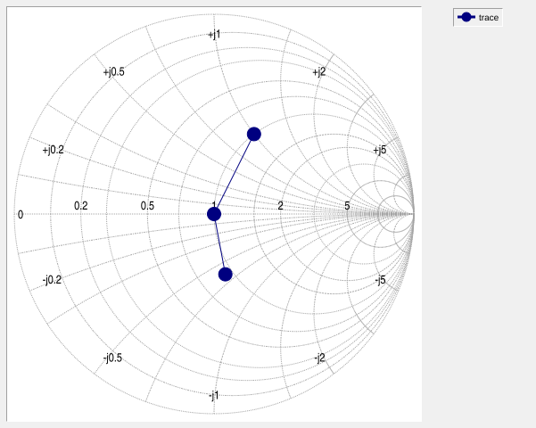
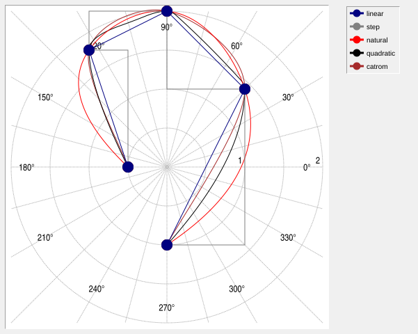
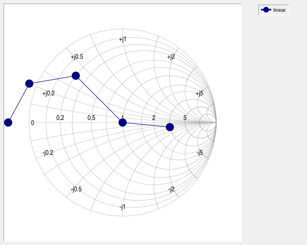

Polar element POLARELEMENT options
This page documents the configuration and behavior of polar elements.
POLARELEMENT denotes an element whose concrete type is PolarElement. Polar elements are the default
element type of a ::rbc::polar widget:
polar .p
.p element create trace
.p element type trace
# -> PolarElement
The common element operations such as create, configure, activate, closest, bind, delete, and
show are documented in ELEMENT.
Polar elements use the same underlying line-rendering machinery as LINEELEMENT. Consequently they support the normal line-element data, axis mapping, pens, styles, symbols, error bars, value labels, trace drawing, area filling, and smoothing options.
In particular, -areaopacity controls solid fill opacity in Cairo and SVG; native rendering and
PostScript ignore it. See LINEELEMENT for the area options and renderer limitations.
Polar elements additionally support direct complex-vector data through -cdata and can interpret complex
values as reflection coefficient, impedance, or admittance.
Creating a polar element
The generic element create operation of a polar widget creates a PolarElement:
polar .p
.p element create trace -data {0 0 0.5 0.5 0 1}
There is no separate GRAPHINST polar create operation.
An explicit line element may still be created in the same widget:
.p line create reference
.p element type reference
# -> LineElement
Such an explicitly created LineElement does not acquire the complex-data behavior of a PolarElement.
Cartesian data
A polar element may use the normal line-element data options:
-data
-x
-y
These always represent Cartesian coordinates:
x = horizontal Cartesian coordinate
y = vertical Cartesian coordinate
They are not interpreted as {radius angle} pairs.
This remains true when the owning polar widget uses:
-representation smith
For example:
polar .p -representation polar
.p element create trace -data {1 0 0.5 0.5 0 1 -0.5 0.5}
.p axis configure x -min -1 -max 1
.p axis configure y -min -1 -max 1

Complex-vector data
-cdata names an Rbc complex vector whose values provide the two-dimensional element data directly.
For example:
vector create gamma -type complex
gamma set {{0.0 0.0} {0.2 0.4} {0.5 0.2} {0.7 -0.1}}
polar .p -representation smith
.p element create trace -cdata gamma

A vector supplied to -cdata must have type complex. A real vector is rejected.
Complex vector attachment is live. If the vector contents or length change, the element is remapped and the graph is redrawn automatically.
Selecting the active data source
A polar element has one active data mode at a time:
ordinary X/Y data
complex vector data
Explicitly configuring a non-empty -cdata selects complex-vector mode.
Explicitly configuring -data, -x, or -y selects ordinary X/Y mode.
For example:
.p element configure trace -cdata gamma
# Switch back to ordinary Cartesian X/Y data.
.p element configure trace -data {0 0 0.5 0.5 1 0}
When more than one data-source option is supplied by the same configuration command, the explicit options are processed in caller order and the final data-source selection determines the active mode.
Real input coordinates
-datacoordinates cartesian (the default) interprets -xdata and -ydata as Cartesian X/Y. With
-datacoordinates polar, -xdata supplies theta in radians and -ydata supplies radius. Both options accept
real vectors or lists. Interleaved -data accepts theta/radius pairs in this mode.
.p element create trace -xdata {0 1.5707963267948966} -ydata {1 2} -datacoordinates polar

Each pair is converted to x = radius*cos(theta), y = radius*sin(theta) before mapping. Source values are
retained: cget returns the original input, and vector changes update the plotted points. The shorter source
determines the number of points, as with Cartesian input. Angles need not be normalized. Negative radius follow
the same conversion equations; non-finite pairs break the trace. In Smith representation, the resulting X/Y
coordinates represent Gamma.
The active data source must be real pairs; complex -cdata requires -datacoordinates cartesian. Error-bar
data options (-xerror, -yerror, -xhigh, -xlow, -yhigh, -ylow) must be empty in polar-coordinate
mode. Angular/radial error bars are not supported. Invalid combinations leave the existing element
configuration unchanged.
Closest results and value-formatting callbacks retain Cartesian X/Y coordinates. Closest dataFormat is
polar for theta/radius input. Its radius is the geometric magnitude and its angle is in radians,
normalized to [0,2*pi), regardless of the input angle. At the origin, angle is zero. Interpolated results
describe the selected point on the plotted Cartesian trace. For exact sample searches, use index to retrieve
the original theta/radius, including any complete turns or radius sign. Smoothing, symbols, active points and
PostScript all use the converted Cartesian geometry.
Parameter mapping
Polar elements support the line-element -param option with either ordinary X/Y data or -cdata. The
parameter is independent of the coordinate representation and is not used when mapping or drawing the trace.
A common use is to associate frequency with points on a Polar or Smith trace:
vector create gamma -type complex
vector create frequency
gamma set {{0.10 0.05} {0.20 0.15} {0.30 0.10} {0.25 -0.05}}
frequency set {1.0e9 2.0e9 3.0e9 4.0e9}
polar .p -representation smith
.p element create S11 -cdata gamma -param frequency
A closest-point query can then recover both the plotted Smith-chart quantities and the corresponding frequency:
if {[.p element closest $x $y info -interpolate no S11]} {
puts "frequency = $info(param)"
puts "Gamma = $info(gamma)"
}
The same length and transactional rules described for LINEELEMENT apply. During element creation or
configuration, the parameter count must equal the final data-point count. If attached vectors are subsequently
resized independently and temporarily have different lengths, plotting continues but info(param) is omitted
until the counts match again.
Complex data formats
-cdataformat controls how values from -cdata are interpreted.
The accepted values are:
gamma
impedance
admittance
The default is gamma.
Interpretation does not depend on the -representation option of the graph.
Gamma
With:
-cdataformat gamma
each complex value is already a reflection coefficient:
Gamma = real + j*imag
and is mapped directly as:
x = real(Gamma)
y = imag(Gamma)
For example:
vector create gamma -type complex
gamma set {{0.0 0.0} {0.25 0.50} {-0.20 0.60}}
.p element create trace -cdata gamma -cdataformat gamma

Impedance
With:
-cdataformat impedance
each complex value represents physical impedance:
Z = R + jX
The value is normalized by the reference impedance Z0:
z = Z / Z0
and then converted to reflection coefficient:
Gamma = (z - 1) / (z + 1)
For example:
vector create z -type complex
z set {{25 -20} {50 0} {75 30} {120 50}}
polar .p -representation smith
.p element create trace -cdata z -cdataformat impedance -z0 50

Admittance
With:
-cdataformat admittance
each complex value represents physical admittance:
Y = G + jB
The normalized admittance is:
y = Y * Z0
and the reflection coefficient is:
Gamma = (1 - y) / (1 + y)
For example:
vector create y -type complex
y set {{0.010 -0.010} {0.020 0.000} {0.015 0.010}}
.p element create trace -cdata y -cdataformat admittance -z0 50

The conversion to Gamma is performed independently of the widget’s grid representation. For example, an impedance data element may still be displayed while the Smith grid is configured for admittance contours.
Reference impedance
-z0 specifies the reference impedance used by impedance and admittance conversion.
The default is:
50.0
-z0 must be finite and greater than zero.
Changing -z0 remaps an attached impedance or admittance vector immediately:
.p element configure trace -z0 75
-z0 has no effect on complex data interpreted directly as gamma.
Singular conversions and trace gaps
Some physical impedance or admittance values cannot be mapped to a finite reflection coefficient.
For impedance, the conversion is singular when:
z + 1 = 0
For example, if:
Z0 = 50
then:
Z = -50 + j0
is singular.
For admittance, the corresponding singular condition is:
y + 1 = 0
Singular points are omitted from the mapped element. They create a real discontinuity in the rendered trace.
Points on opposite sides of such a discontinuity are never connected:
valid points ... | singular point | ... valid points
^
trace break
Non-finite data and values invalid for the mapped axes similarly create trace breaks.
Smoothing
Polar elements support the same -smooth names as line elements:
linear
step
natural
cubic
quadratic
catrom
cubic is an alias for natural.
The important difference from an ordinary LineElement is that natural/cubic and quadratic smoothing
are parametric for a PolarElement.
Instead of requiring:
y = f(x)
a Polar spline interpolates a two-dimensional path:
p(t) = {x(t), y(t)}
This allows trajectories whose X coordinate reverses direction, vertical trajectories, and loops.
For example:
vector create z -type complex
z set {{ 0 -1} { 1 1} { 0 2} {-1 1.5} {-0.5 0}}
.p element create linear -cdata z -smooth linear
.p element create step -cdata z -smooth step -color grey
.p element create natural -cdata z -smooth natural -color red
.p element create quadratic -cdata z -smooth quadratic -color black
.p element create catrom -cdata z -smooth catrom -color brown

catrom is also parametric.
linear joins mapped points with straight segments.
step retains the normal Cartesian step-and-hold behavior; it does not perform radius/angle stepping.
Smoothing is performed on the actual mapped two-dimensional trace. For complex impedance and admittance data, conversion to Gamma occurs before the displayed path is smoothed.
A discontinuity divides the element into independent continuous runs. Each run containing enough points is smoothed separately. No spline is ever constructed through a missing or singular point.
Smoothing does not implicitly close a path. To request a closed visual trajectory, repeat the first source point as the final source point:
z set {{1 0} {0 1} {-1 0} {0 -1} {1 0}}
Axis mapping
Polar elements support the normal line-element -mapx and -mapy options:
.p element create trace -cdata gamma -mapx x2 -mapy y2
These mappings are independent of the axes used to construct the Polar or Smith grid.
To display the element and grid through the same alternate coordinate system, configure both:
.p grid configure -mapx x2 -mapy y2
.p element configure trace -mapx x2 -mapy y2
-invertxy on the owning polar widget is supported by Polar elements.
Data outside the Smith unit circle
Smith representation does not clip element data to:
|Gamma| <= 1
Values outside the unit circle are valid plotted coordinates when they are contained by the mapped axis ranges.
For example, negative-resistance impedance may produce:
|Gamma| > 1
and remains visible if the graph limits include it.
The unit circle is therefore a Smith-chart reference contour, not an element clipping boundary.
For example:
vector create z -type complex
z set {{-5 0} {-2 10} {10 20} {50 0} {150 -20}}
.p element create linear -cdata z -cdataformat impedance

Closest-point information
ELEMENT closest works with Polar elements in the same way as line elements:
.p element closest $x $y info -along both -interpolate yes
With -interpolate yes, the search follows the rendered Polar trace, including spline-generated segments.
The normal result entries are:
info(name)
info(index)
info(x)
info(y)
info(dist)
If the element has a valid -param mapping, the result also contains:
info(param)
param is the parameter value associated with info(index). It uses the same source-index semantics described
for LINEELEMENT; it is not interpolated when -interpolate yes selects a point between source samples.
For a Polar element, the result additionally contains:
info(radius)
info(angle)
radius is the magnitude of the selected Cartesian point.
angle is its angle in radians, normalized from zero through less than 2*pi. The angle at the origin is
reported as zero.
This changes the earlier degree-valued closest result. Convert radians with angle*180/acos(-1) when
degrees are needed. Angular grid ticks and -anglecommand continue to use degrees.
Graphtoolbar offers polar (radians) and polardegrees (degrees) for polar annotations.
In Smith representation, closest information additionally includes the plotted reflection coefficient and equivalent impedance and admittance quantities:
info(gamma)
info(z0)
info(normalizedResistance)
info(normalizedReactance)
info(normalizedImpedance)
info(resistance)
info(reactance)
info(impedance)
info(normalizedConductance)
info(normalizedSusceptance)
info(normalizedAdmittance)
info(conductance)
info(susceptance)
info(admittance)
gamma, normalizedImpedance, impedance, normalizedAdmittance, and admittance are two-element
{real imag} values.
The Smith information describes the selected plotted Gamma position, not merely the original representation
used by -cdataformat. Consequently both equivalent impedance and admittance information are available whether
the source element was supplied as Gamma, impedance, or admittance.
The physical values are derived using the element’s -z0.
At the Smith endpoints, an equivalent impedance or admittance may be infinite.
PostScript/SVG output
Polar elements use the same mapped trace for window drawing and PostScript/SVG output.
Complex-data conversion, trace breaks, parametric smoothing, symbols, pens, and other line-rendering attributes therefore apply to PostScript/SVG output as well as on-screen drawing.
Polar element options
Polar elements support the configuration options documented for LINEELEMENT, except for -decimate and the
-errorband* options, which require Cartesian line or strip elements. Polar elements also provide the
Polar-specific additions below.
Option |
Database name |
Database class |
Description |
|---|---|---|---|
|
|
|
Real input pairs: |
|
|
|
Specifies a complex Rbc vector used as the element data source. An empty value selects ordinary X/Y data mode. |
|
|
|
Specifies how complex data are interpreted: |
|
|
|
Specifies the positive finite reference impedance used for impedance/admittance conversion. The default is |
Except for -decimate, the remaining options have the same database names, classes, defaults, and basic
drawing semantics described in LINEELEMENT.
Where Polar behavior intentionally differs from ordinary line behavior, in particular parametric smoothing and complex-data mapping, the differences are described above.
Copyright (c) George Yashin